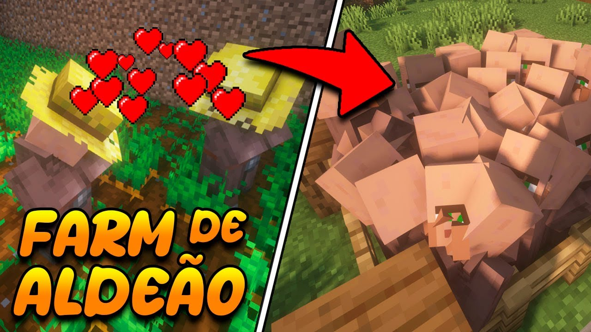
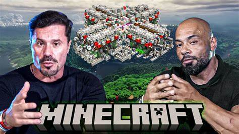
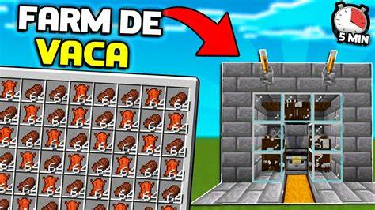

Provavelmente eu diria uma farm de peixe, construindo ela em um oceano, com poucos recursos, ela fornece muita comida, mais de 6000 peixes por hora.

Ela fica no oceano, e pra gerar comida, você tem que sempre ir até ela, muito lixo. Não tem como.

Farm de galinha 100% automática, fácil e prática de se fazer early game, além de que você pode na sua base.

Aí vocês tocaram num ponto muito interessante a gente tem que pensar no early game também, e a primeira coisa que um pro player faz no mundo é uma farm de aldeões. Tanto pra farm de ferro quanto pra trocas, mas isso também é uma verdade pensando para as farms de alimentos.
Escravizar aldeões para produzir tubérculos como a batata é uma ótima opção. Você pode aumentar a escala. Não dá bugs e é 100% AFK. Muito melhor não tem como.

Gente, de verdade, presta atenção aqui. Batata você tem que assar e nem é tão boa assim. Muzy de verdade, todo mundo sabe que você usa criativo. A sua série do hardcore em 2018, geral sabe que você mineirou em off. Quer saber farm boa? Farm de boi né noob!

A carne alimenta muito mais e tem mais saturação, uma farm super simples pro early game,e você consegue gerar uma grande quantidade de comida de excelente qualidade nutricional. É muito roubado Muzy. NÃO TEM COMO!